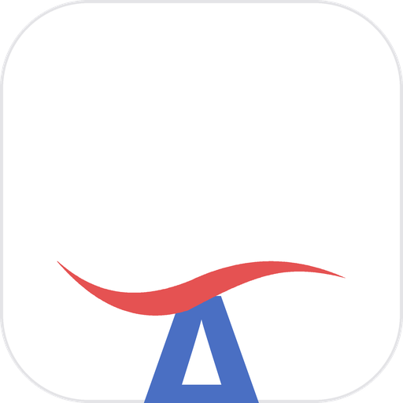

Altradits Master Brand & Favicon Verification
1. Frosted Navbar Logo Blending (Big, Crisp, Seamless)
Gigs
Expeditions
Network
Connect
2. White Favicon (SVG & High-DPI PNG)
SVG Master (96px)

PNG 64px
Browser Tab 32px
Favicon 16px
On Dark Browser Tab Bar:
3. Scalable Vector Graphic (logo.svg)
 SVG Master (96px)
SVG Master (96px)